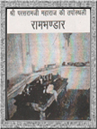
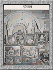
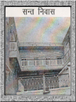

| परसरामजी रामभण्डार |
|

सूरसागर सरोवर की शोभा के लिए सरोवर के चारों ओर सुन्दर छतरियें बनी थी। उन छतरियों में से ऊँची पहाडी पर स्थापित छतरी में श्री परसरामजी महाराज खेड़ापा में श्री रामदासजी महाराज से दीक्षा लेकर गुरू आज्ञा से रामत करते हुए यहां पधारे और इसी छतरी में विराजमान होकर तपस्या की। महाराजश्री जब छतरी में विराजमान होते थे उस समय भक्तजन छतरी को चारों ओर से घास-पत्तों द्वारा बन्द करके कुटिया बना देते थे। वर्तमान में इस छतरी में राम भण्डार है। भिक्षा का प्रसाद इस छतरी में पाटे पर रखा जाता है उसके बाद भिक्षा छांटकर पंक्ति लगती है। |
| देवल |
|

श्री सेवगरामजी महाराज जिस विशाल चटटान पर श्री परसरामजी महाराज को नित्य विराजमान देखते थे, उस पावन स्थान पर विशाल कलात्मक देवल का निर्माण कराया। जिसका उल्लेख हमें परची में मिलता है। |
| संत निवास |
|

रामौला क्षेत्र में वर्तमान अधिकारी सन्त श्री रामप्रसाद जी महाराज ने परमहंस श्री अभयरामजी महाराज की सत्प्रेरणा से सन्त निवास का निर्माण कराया। बाहर से पधारने वाले सन्तों के लिए युगानुरूप सुन्दर सन्त निवास सन्तों के पावन धाम की सुन्दर शोभा है। सन्तों के पावन धाम में रामौला में ही पाकशाला बनी हुर्इ है। श्री परसरामजी महाराज भिक्षावृत्ति से प्रसाद लेते थे। बाद में भक्तजनों ने रावटी रोड नेनची बाग मे रामभण्डार बनाया। जहां से प्रसाद बनाकर रामद्वारा लेकर आते थे। बाद में परमहंस श्री अभयरामजी महाराज ने रामद्वारा में ही छोटी रसोर्इ सं. 2008 में स्थापित की। तत्पश्चात सं. 2018 में विशाल पाकशाला का निर्माणा कराया गया। |